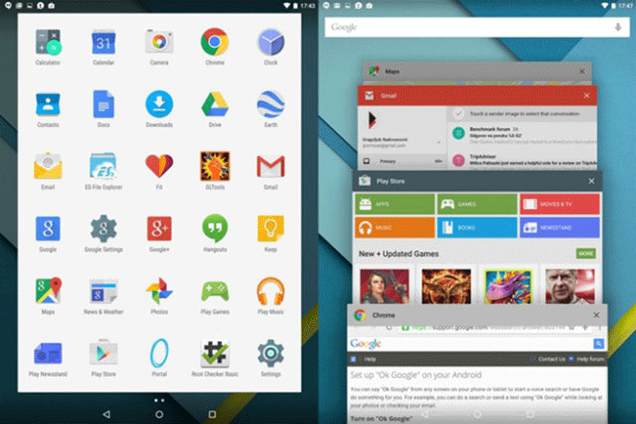

Android 5.0 - Lollipop
Dolazi nam nova verzija Androida
Uvek se radujemo novim verzijama Androida i novitetima koje sa sobom donose, a razloga da budemo uzbuđeni oko 5.0 verzije ima poprilično. Lollipop nije samo blaža nadogradnja kao što je bio slučaj kod Jelly Bean-KitKat tranzicije, već je u pitanju poprilično veliko unapređenje sa potpunim redizajnom korisničkog interfejsa, koji uz to donosi sijaset novih mogućnosti. Android L, kako je prethodno obeležavan, dostupan je u formi Developer Preview-a još od Google I/O skupa krajem juna meseca, i to samo za Nexus 5 i Nexus 7. Takoreći, Lollipop je nezvanično dostupan već mesecima za one nestrpljive sa pomenutim uređajima, ali zvaničan je postao tek od sredine oktobra sa otkrivanjem Nexus 6 smartfona i Nexus 9 tableta.
Noviteti unutar Android 5.0 su brojni. Jedna od glavnih promena, takoreći ispod haube, jeste kompletan prelazak sa Dalvik na ART runtime. ART (Android Runtime) je jednostavno efikasniji i brži za sistem, a predstavljen je sa KitKat verzijom gde je bio u eksperimentalnoj fazi. Tu je naravno i najavljena 64-bitna podrška za uređaje i aplikacije. Nama interesantan dodatak je što Google Now sada funkcioniše čak i kada je ekran isključen ili zaključan, pa u svakom trenutku uređaj reaguje na "OK Google" komandu. Kada kažemo u svakom trenutku, mislimo na to gde god da se nalazite u interfejsu ili bilo kojoj aplikaciji - OK Google komanda funkcioniše. Ova mogućnost ne važi za sve uređaje, već isključivo za one sa Digital Signal Processing čipom: u ovom trenutku samo za Nexus 6, Nexus 9 i Note 4.
Noviteti unutar Android 5.0 su brojni. Jedna od glavnih promena, takoreći ispod haube, jeste kompletan prelazak sa Dalvik na ART runtime. ART (Android Runtime) je jednostavno efikasniji i brži za sistem, a predstavljen je sa KitKat verzijom gde je bio u eksperimentalnoj fazi. Tu je naravno i najavljena 64-bitna podrška za uređaje i aplikacije. Nama interesantan dodatak je što Google Now sada funkcioniše čak i kada je ekran isključen ili zaključan, pa u svakom trenutku uređaj reaguje na "OK Google" komandu. Kada kažemo u svakom trenutku, mislimo na to gde god da se nalazite u interfejsu ili bilo kojoj aplikaciji - OK Google komanda funkcioniše. Ova mogućnost ne važi za sve uređaje, već isključivo za one sa Digital Signal Processing čipom: u ovom trenutku samo za Nexus 6, Nexus 9 i Note 4.
